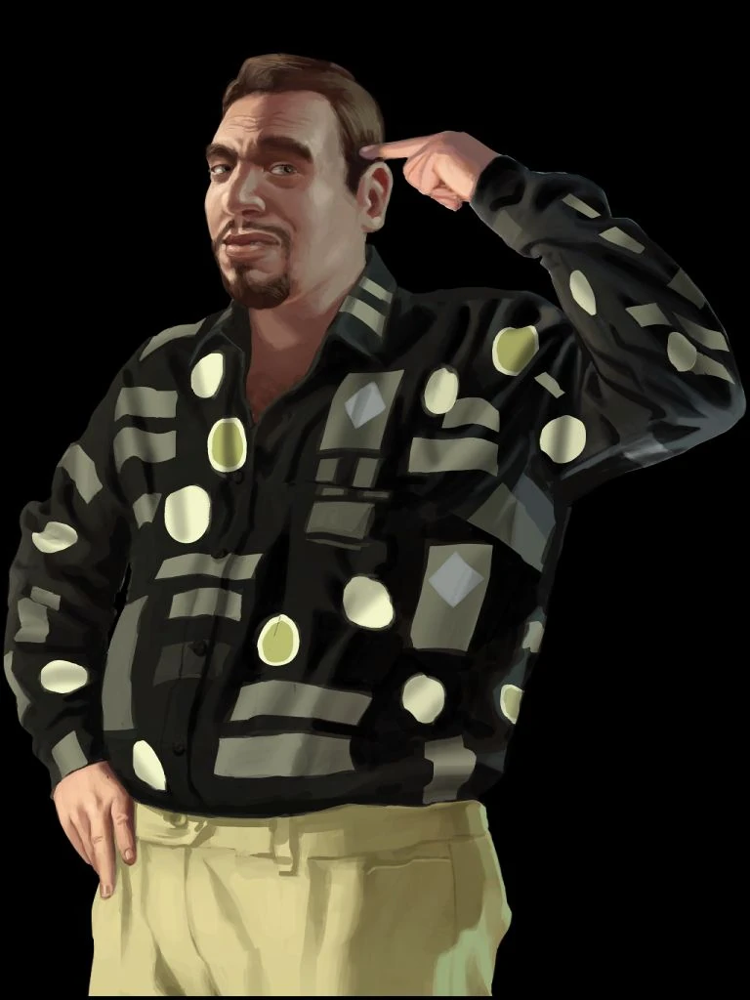
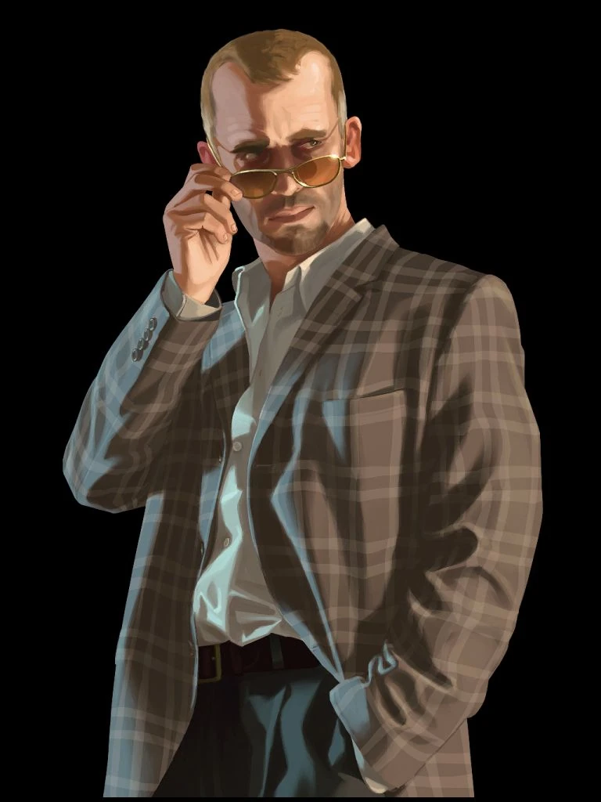
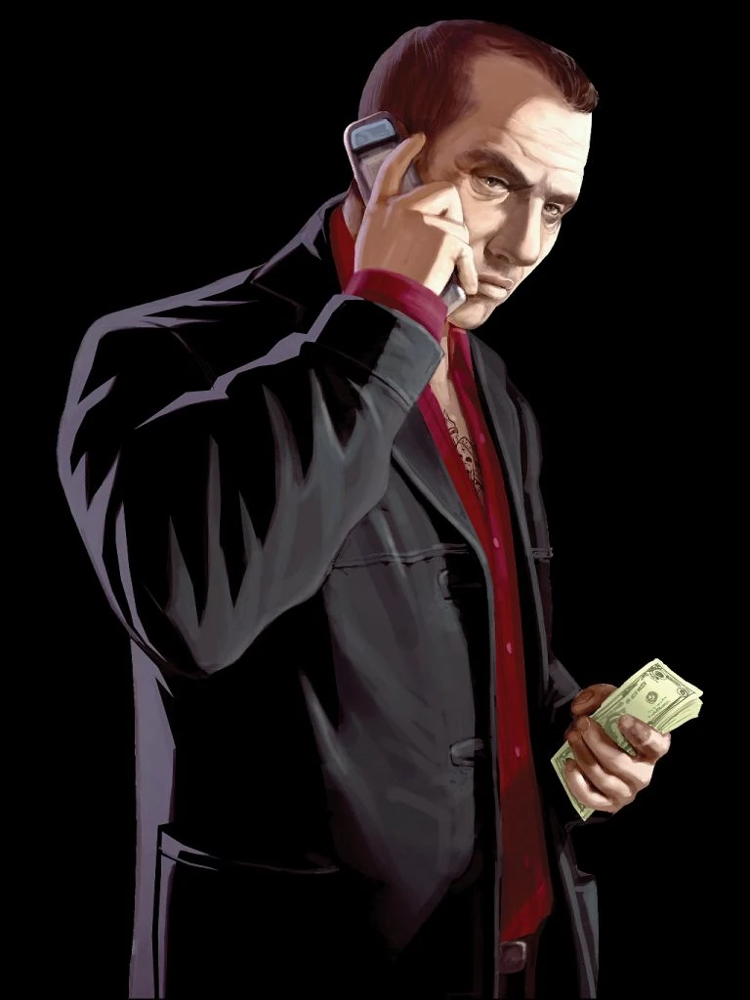

Niko Bellic - Le Vétéran
Origine : Europe de l'Est (Serbie).
Ancien soldat marqué par les horreurs de la guerre, Niko débarque à Liberty City pour fuir son passé et venger une trahison datant de son unité militaire. Il est cynique, froid mais possède un code d'honneur strict. Sa carrure imposante et ses cicatrices témoignent de sa vie de combat.

Roman Bellic - Le Rêveur
Caractéristique : Propriétaire d'une petite entreprise de taxis à Broker.
Cousin de Niko, Roman est l'opposé total : optimiste, naïf et accro aux jeux d'argent. C'est lui qui attire Niko en Amérique en lui promettant une vie de luxe qu'il ne possède pas réellement. Malgré ses mensonges, il est le seul lien affectif fort de Niko dans cette ville hostile.

Dimitri Rascalov - L'Opportuniste
Rôle : Antagoniste principal et traître.
Dimitri est un homme calme, raffiné, mais d'une cruauté absolue. Contrairement aux autres criminels, il utilise la manipulation et la trahison plutôt que la force brute pour grimper les échelons de la pègre russe. Il devient l'ennemi juré de Niko après avoir trahi son propre partenaire.

Mikhail Faustin - Le Parrain Instable
Statut : Chef de la mafia russe à Broker.
Faustin est un homme imprévisible et paranoïaque, souvent sous l'influence de substances qui le rendent extrêmement violent. Autrefois ami proche de Dimitri, sa perte de contrôle menace son empire criminel. Il est le premier grand employeur de Niko dans le monde criminel de Liberty City.
